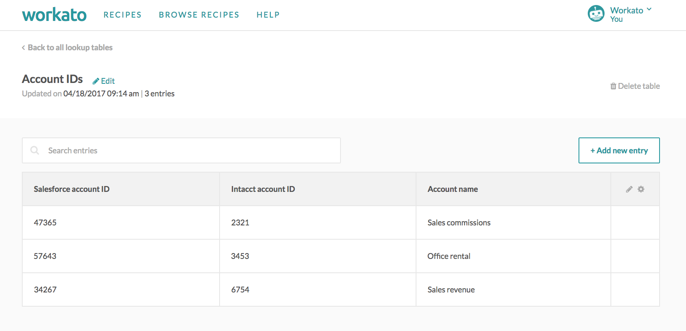
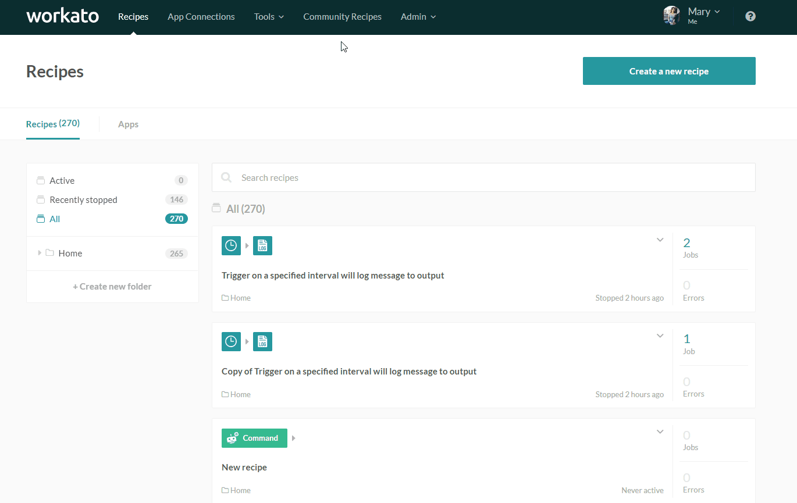
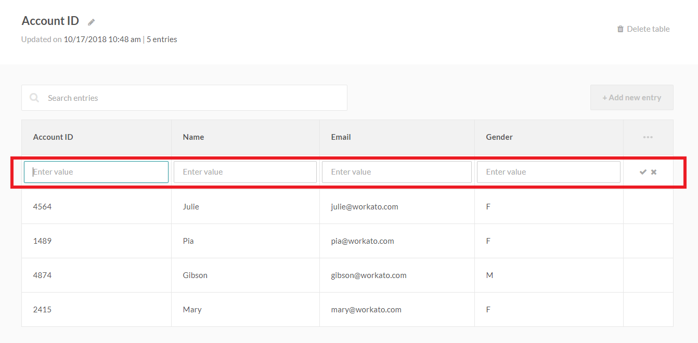
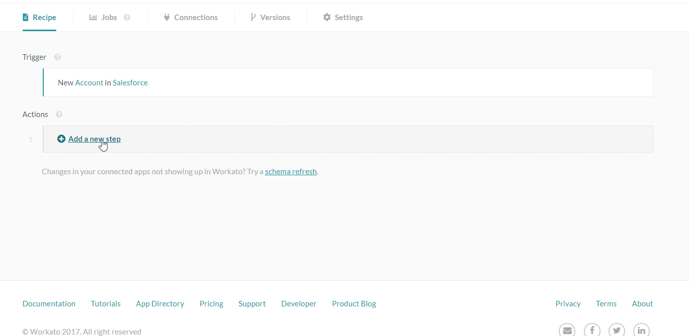
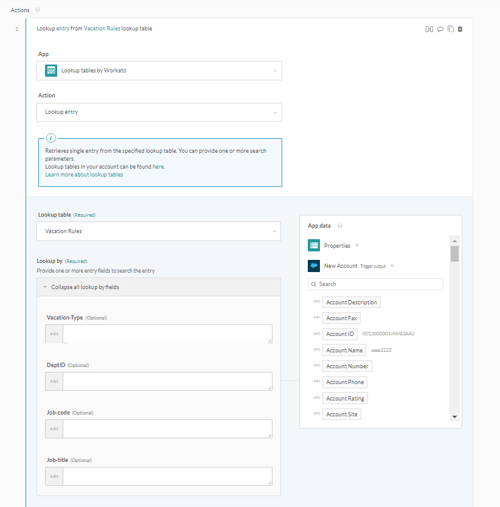
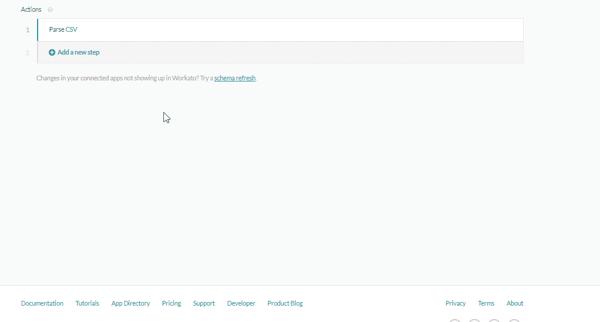
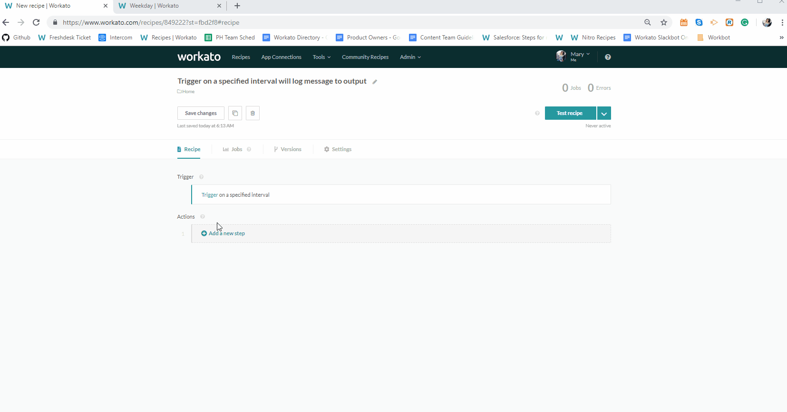
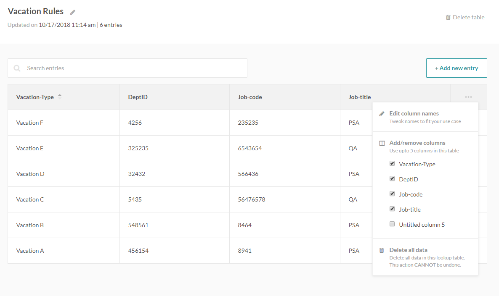

Lookup tables
Lookup tables (AKA cross reference tables) enable users to quickly and easily lookup frequently used data that is static and immutable.
Data in lookup tables is typically organized like a database table, with columns and rows of data. You can lookup an entry within the specified lookup table by using:
- Any column
- Multiple columns
For example, if I'm trying to move accounting entries from my sales app into my accounting app i.e. Salesforce to Intacct, I might find that both departments are using different account codes internally. In order to ensure data is synced accurately from Salesforce into Intacct, I would need to take the account codes from Salesforce, find the matching codes in Intacct, and create the Intacct accounting entries using the corresponding Intacct account codes. In the following table, any Salesforce entries coming in with the code 34267 will be written into Intacct under the code 6754.
 Lookup table with the account ID in Salesforce, account ID in Intacct, and the account names
Some other scenarios where you might need lookup tables:
- Given a city name, you want to get the zip code
- Given a metric unit, you want to convert to SI for distances
- Given a department and rank, you want to retrieve vacation accrual rates
Lookup tables are enabled only for certain plans. Check the Pricing and Plans page or reach out to Workato sales representatives at +1 (844) 469-6752 to find out more.
Setting up your lookup tables
There are three ways to upload data into your lookup tables:
- Import an existing CSV file
- Add new entries manually
- Add new entries via a recipe
Note: Lookup tables are immutable and the existing entries cannot be modified or deleted.
Importing an existing CSV file
The GIF below walks you through the process of creating a lookup table and loading it with data imported from a CSV file.
 Creating a new lookup table and importing a CSV file
Adding new entries manually
You can manually enter additional lookup table entries.
 Click on the Add new entry button
Click on the Add new entry button
 A new blank row will be generated for values to be entered
Adding new entries via a recipe
There is a Lookup table connector that allows you to automate your work with lookup tables. This connector supports adding of new entries via a recipe.
Using the lookup table connector
The Lookup table utility connector allows you to work with your tables via recipes. This connector supports the following actions:
- Lookup entry
- Search entries
- Add entry
Add entry action
Add a new entry to an existing lookup table. You can use this action to keep your lookup tables updated, e.g. read newly created job titles from your human resources application and create a new entry for that job title in your lookup table.
 Select the lookup table to write to and then input the values to provide for each cell of the row
Lookup entry action
The lookup entry action allows you to search for an entry (a row in the lookup table) by any of its values. The lookup entry action behaves like a search and retrieves a single entry. The first matching entry depends on the values passed in. If you have duplicate entries (i.e. your lookup will return more than one entry), only one entry will be retrieved.
In the example below, we have a table called Vacation Rules with 4 columns - vacation type, department ID, job code and job title.
 Using the lookup entry action in the recipe
In the following gif, we configure the lookup entry table to search for a specific row that matches the values we have (in that job) for department ID and job code. In the subsequent step, we can see what's returned - a single entry with all 4 available values. If we were looking for the corresponding vacation type and job title, we can use those datapills from the datatree.
The following gif walks you through the flow of configuring the lookup entry action to retrieve a matching entry.
 Configuring the action to lookup entries with the matching department ID and job code
Search entries action
The search entries action works similarly to the lookup action. The main difference between them is that lookup action returns a single entry whereas the search entries action returns a list of entries.
Use this if you expect a list of matching entries to be returned, and wish to process the list accordingly.
Lookup table formulas
Instead of using an action step to carry out the entry lookup, you can also use a formula to lookup entries in your lookup table. This is as efficient as the lookup action and can be done within the input field without requiring additional actions.
To use the formula, set the input field to formula mode, and enter the formula in this format:
lookup(table name,column name for search: data pill)[column name for result]
 Using the lookup table formula to lookup entries in table Test
Limits
Each lookup table supports up to 5 columns of data. Each column can be used as a key to lookup the entry.
 Maximum of 5 data columns available
There is a maximum of 5000 entries per lookup table.